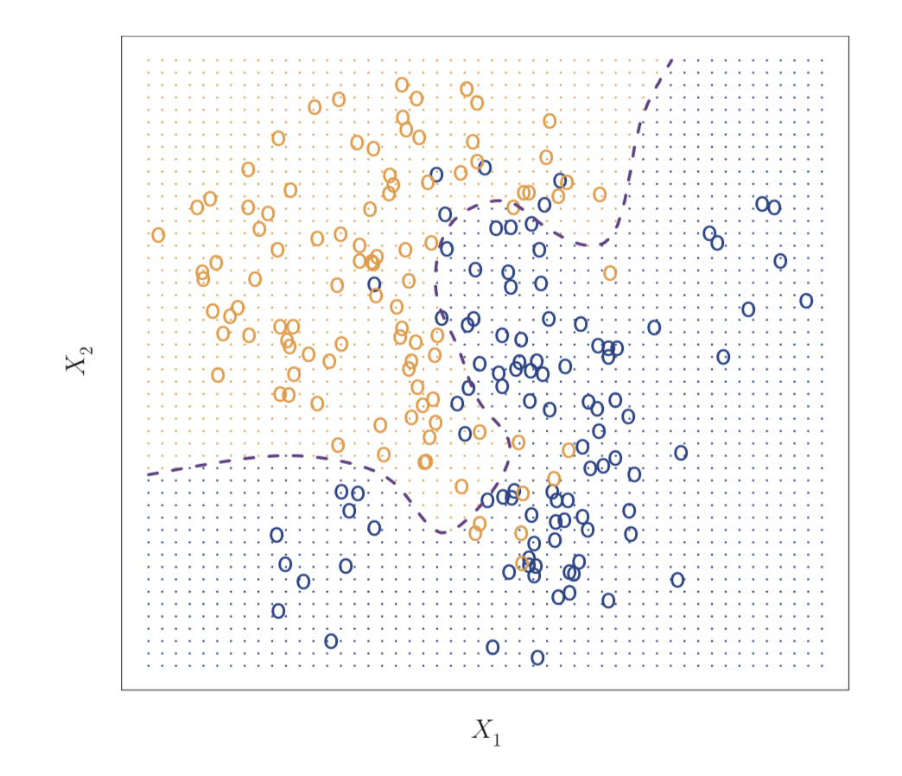
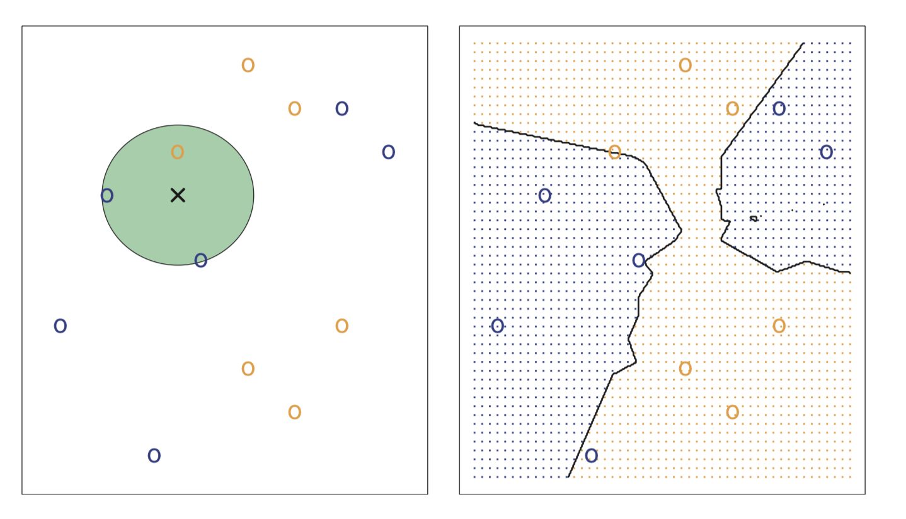

데이터 임상의학 w/ R (4)
Yoon-Ho Hong, MD, PhD
Aug 21, 2018
Machine Learning
What is machine learning (statistical learning)?
\(Y\) = f(\(X\)) + \(e\)
\(X\) = \(X_1\) + \(X_2\) + … + \(X_p\); predictors, independent variables, features, variables
\(Y\); response variable, dependent variable
\(e\); random error term (independent of \(X\), mean = 0)
how to estimate the function \(f\)?
- parametric methods
- assume about the functional form (model-based)
- fit the model by using the data (training) (ex. least squares)
- non-parametric methods
- not assume about the functional form of \(f\)
- estimate \(f\) that gets as close to data points as possible w/o being too much wiggly
figure


Why estimate \(f\)?
- prediction
\[\hat{Y} = \hat{f}(X)\]
not typically concerned with the exact form of f, provided that it yields accurate predictions for Y (blackbox)
accuracy of \(\hat{Y}\) depends on…
- reducible error
- irreducible error (due to unmeasured variables or unmeasurable variation)
- inference
- which predictors are associated with the response?
- what is the relationship between the response and each predictor?
- etc…
Model flexibility vs. Interpretability
figure

Note If we are only interested in prediction, and the interpretability of the predictive model is simply not of interest, you might expect that it will be best to use the most flexible model available. Surprisingly, this is not always the case! We will often obtain more accurate predictions using a less flexible method. This phenomenon, which may seem counterintuitive at first glance, has to do with the potential for overfitting in highly flexible methods.
Supervised vs. Unsupervised learning
When we have no response variable \(Y\), what sort of learning is possible? We can seek to understand the relationships between the variables or between the observations (cluster analysis)
Regression vs. Classification
whether the response variable is quantitative (regression) or qualitative (classification)
Bayes classifier
assigns each observation to the most likely class, given its predictor values
\[Pr(Y=j|X)\] figure  ***
Note But for real data, we do not know the conditional distri- bution of Y given X, and so computing the Bayes classifier is impossible.
K-nearest neighbors (KNN)
figure 
How to asess the accuracy of model?
Note No free lunch theorem Selecting the best approach can be one of the most challenging parts of performing statistical learning in practice.
mean squared error (MSE)
\[MSE = \frac{1}{n}\sum_{i=1}^{n}(y_i - \hat{f}(x_i))^2\]
error rate
\[\frac{1}{n}\sum_{i=1}^{n}I(y_i \neq \hat{y_i})\]
Trade-off between Bias-Variance
Bias: error
Variance: how much the \(\hat{f}\) changes with different training data sets
Test MSE: model accuracy
As a general rule, as we use more flexible methods, the variance will increase and the bias will decrease
figure 

The challenge lies in finding a method for which both the variance and the squared bias are low.
Exercises
- For each of parts (a) through (d), indicate whether we would generally expect the performance of a flexible statistical learning method to be better or worse than an inflexible method. Justify your answer.
- The sample size n is extremely large, and the number of predic- tors p is small.
- The number of predictors p is extremely large, and the number of observations n is small.
- The relationship between the predictors and response is highly non-linear.
- The variance of the error terms, i.e. σ2 = Var(ε), is extremely high.
- Explain whether each scenario is a classification or regression problem, and indicate whether we are most interested in inference or prediction. Finally, provide n and p.
- We collect a set of data on the top 500 firms in the US. For each firm we record profit, number of employees, industry and the CEO salary. We are interested in understanding which factors affect CEO salary.
- We are considering launching a new product and wish to know whether it will be a success or a failure. We collect data on 20 similar products that were previously launched. For each prod- uct we have recorded whether it was a success or failure, price charged for the product, marketing budget, competition price, and ten other variables.
- We are interesting in predicting the % change in the US dollar in relation to the weekly changes in the world stock markets. Hence we collect weekly data for all of 2012. For each week we record the % change in the dollar, the % change in the US market, the % change in the British market, and the % change in the German market.
- You will now think of some medical applications for machine learning.
- Describe three real-life applications in which classification might be useful. Describe the response, as well as the predictors. Is the goal of each application inference or prediction? Explain your answer.
- Describe three real-life applications in which regression might be useful. Describe the response, as well as the predictors. Is the goal of each application inference or prediction? Explain your answer.
- Describe three real-life applications in which cluster analysis might be useful.
What are the advantages and disadvantages of a very flexible (versus a less flexible) approach for regression or classification? Under what circumstances might a more flexible approach be preferred to a less flexible approach? When might a less flexible approach be preferred?
Describe the differences between a parametric and a non-parametric statistical learning approach. What are the advantages of a para- metric approach to regression or classification (as opposed to a non- parametric approach)? What are its disadvantages?
The table below provides a training data set containing six observa- tions, three predictors, and one qualitative response variable.
| Obs. | \(X_1\) | \(X_2\) | \(X_3\) | \(Y\) |
|---|---|---|---|---|
| 1 | 0 | 3 | 0 | Red |
| 2 | 2 | 0 | 0 | Red |
| 3 | 0 | 1 | 3 | Red |
| 4 | 0 | 1 | 2 | Green |
| 5 | -1 | 0 | 1 | Green |
| 6 | 1 | 1 | 1 | Red |
Suppose we wish to use this data set to make a prediction for Y when X1 = X2 = X3 = 0 using K-nearest neighbors. (a) Compute the Euclidean distance between each observation and thetestpoint,X1 =X2 =X3 =0.
- What is our prediction with K = 1? Why?
- What is our prediction with K = 3? Why?
- If the Bayes decision boundary in this problem is highly non- linear, then would we expect the best value for K to be large or small? Why?